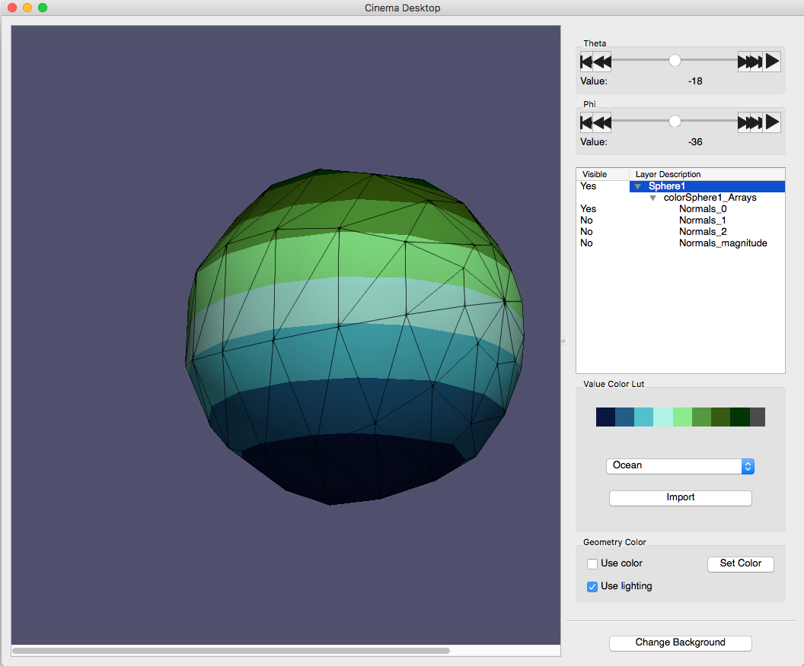
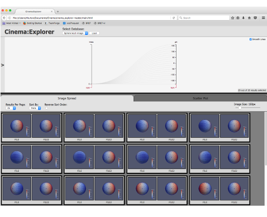
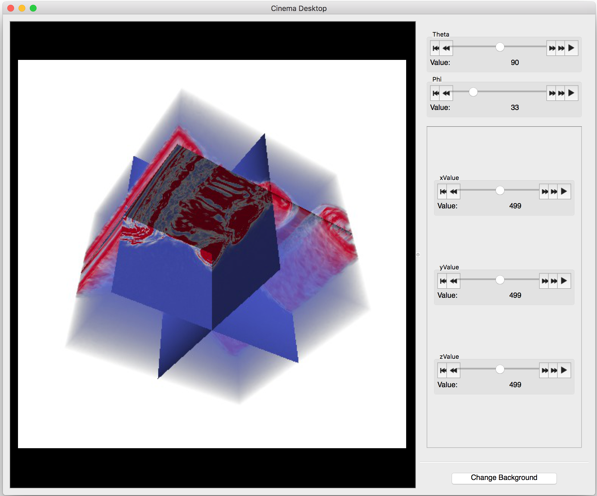
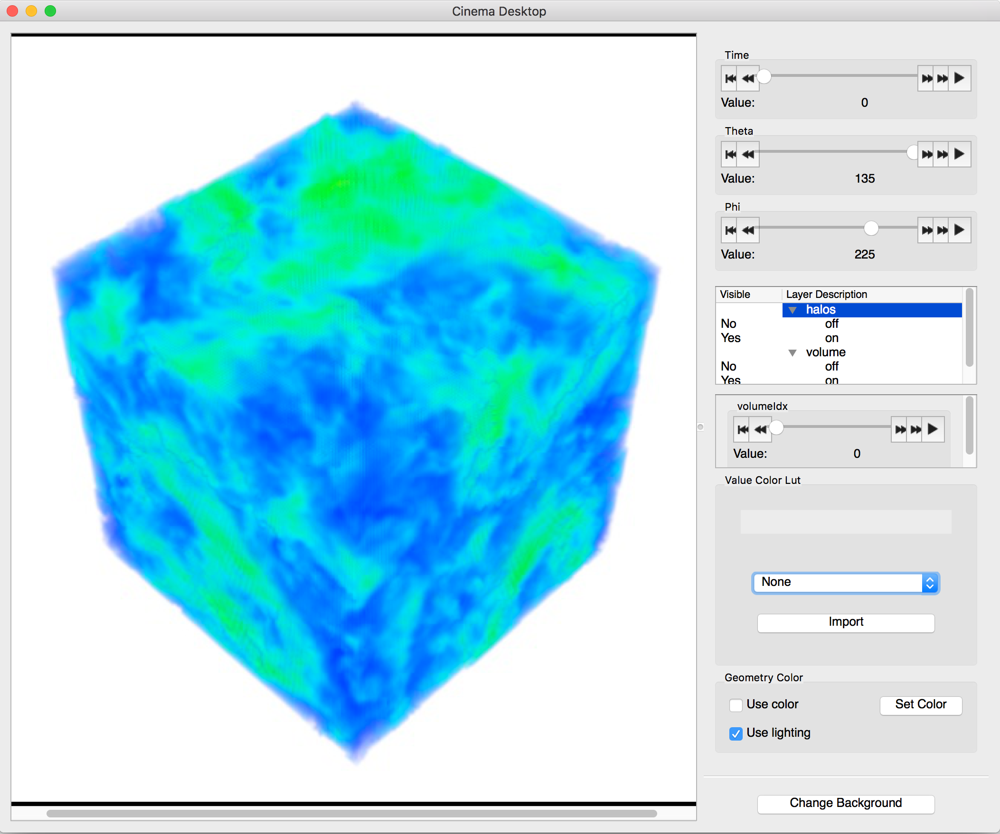
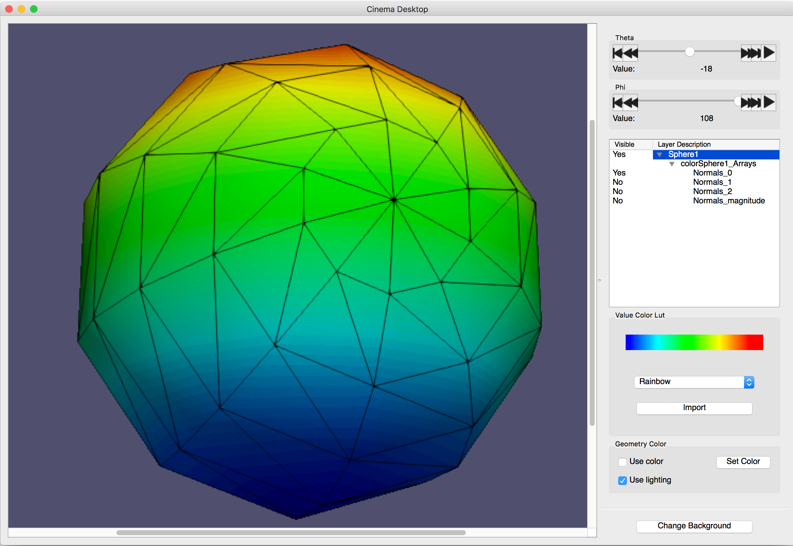
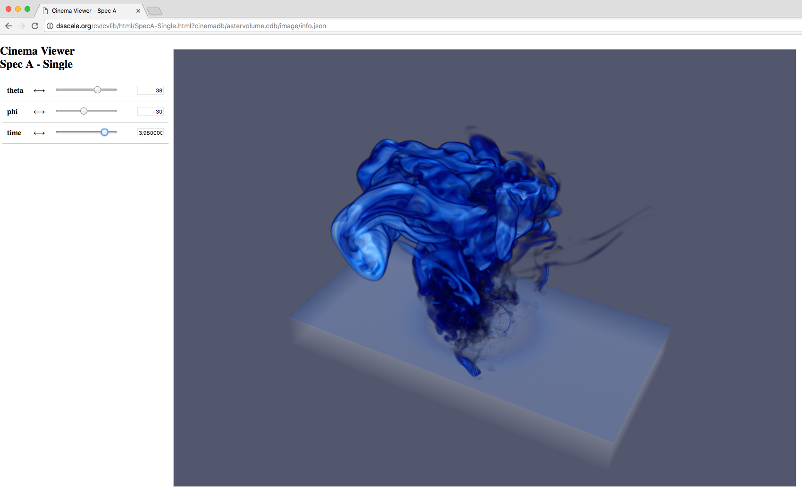
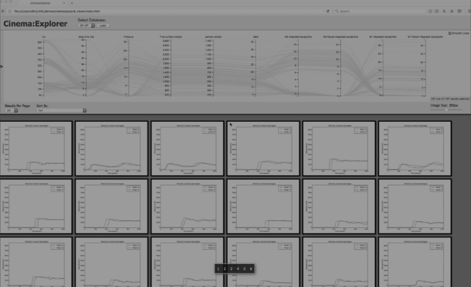

Cinema Specifications and Downloads
Cinema Specifications
The official Cinema specifications can be found in the following documents:
Example Sphere Databases
These are sample Cinema databases (CDBs) that can be used to explore Cinema functionality. Each database includes the control file for that specification: info.json for Spec A & Spec C or data.csv for Spec D. Images for each database are organized into the necessary subdirectories.

Spec A Sphere: this "Simple" database has 1 theta and 20 phi values.

Spec C Sphere: this database has 5 theta and 5 phi values.

Spec D Sphere: this database has 1 theta and 20 phi values.
Science Example Databases
These are more realistic science-based example databases. Both are Spec C databases and include multiple channels which can be separately visualized (e.g., turned on or off) with an appropriate viewer.

VPIC Simulation: a VPIC (Vector Particle-in-Cell) plasma simulation.

HACC Simulation: HACC (Hardware/Hybrid Accelerated Cosmology Code) cosmology simulation.
Cinema Viewers
These are reference implementations of Cinema viewers that work on the different Cinema specs.

Cinema Desktop Viewer: an application to view Spec A & Spec C databases. Choose version (Mac downloads may require starting twice on some systems).

Cinema CVLIB: A browser-based Spec A/C viewer. Run directly from browser.

Cinema Explorer: A browser-based Spec D parallel coordinates viewer. Download from the Github repository.